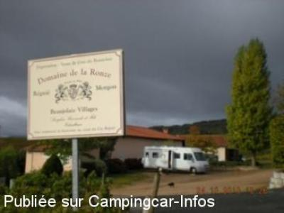

ASN = Aire de services avec stationnement nuit possible de :
RÉGNIÉ DURETTE
(N° 613)
Accès/adresse :
La Haute-Ronze
69430 RÉGNIÉ DURETTE
69430 RÉGNIÉ DURETTE
Latitude : (Nord) 46.16139° Décimaux ou 46° 9′ 41′′
Longitude : (Est) 4.64417° Décimaux ou 4° 38′ 39′′
Tarif : Gratuit
Services :


Autres informations :
Aire Privée de M. Seraphin Bernardo, Viticulteur

Le 26/10/2010 par jean
de
jean
le 26/10/2010 :
Je confirme, les viticulteurs sont très sympas et très accueillants et le beaujolais est extra.
Je confirme, les viticulteurs sont très sympas et très accueillants et le beaujolais est extra.
de
tetu.robert
le 09/04/2007 :
Accueil très sympathique de la part de la famille qui vous fera déguster leur vin avec grand plaisir. Un coin très calme, très belle vue.
Prendre direction de ville Morgon sur la D9, en direction de Beaujeu avant le village une route sur la droite, domaine de la Haute Ronze
Accueil très sympathique de la part de la famille qui vous fera déguster leur vin avec grand plaisir. Un coin très calme, très belle vue.
Prendre direction de ville Morgon sur la D9, en direction de Beaujeu avant le village une route sur la droite, domaine de la Haute Ronze